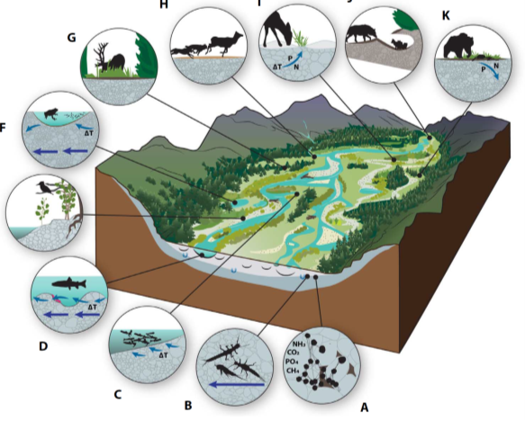
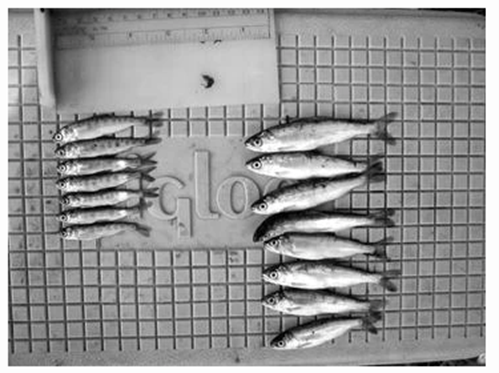

There are multiple practical and potential benefits that result from Stage Zero projects, a brief description is provided for as many of these as possible, but more information can be found under resources and peer-reviewed article tabs.
When strict requirements, such as number of pools, are replaced by more holistic goals restoration becomes more affordable (Hiers et al., 2016). This variability also increases resilience where banks no longer need to be reinforced to maintain static geomorphic features (Bernhardt and Palmer, 2011), in turn further reducing post project costs.
A lot of the benefits of Stage Zero can be found in the ecosystem benefits of wetlands and floodplains which has been known about for much longer than this paradigm. Disconnection of river systems from their natural flood plains is clearly documented to damage aquatic, terrestrial and avian communities (Burges et al., 2013).
To some extent the riparian zone can be seen to stretch a kilometer either side of the channel itself, thus extending the benefits of Stage Zero sites where there is inherently full flood plain connection in the form of a patchwork of channels and partially flooded wetlands. In these ground water moving into the fluvial system contains bioavailable solutes which provide the building blocks for primary productivity (Stanford and Ward, 1993). Downwelling river water provides dissolved oxygen and organic matter to microbes and macroinvertebrates that exist in the hyporheic zone (Boulton et al., 1998).
Conceptual diagram from Hauer et al., 2016 displaying how the whole ecosystem interacts and relies upon a fully connected river.
One of the ways this anastomosed system is created and hyporheic connectivity is encouraged is through interactions with log jams and large woody debris. These collections of wood block the channel and push water out of any individual channel and into the topographically heterogeneous valley bottom. This is further enhanced by beaver in the PNW who construct wood into dams which slow the flow and spread water without completely blocking passages due to “leaking” and partial destruction during flood events. These structures encourage carbon sequestration through deposition and storage of vegetation which eventually forms peat-like soils in a similar way to wetland systems.
Resilience is built into Stage Zero projects through the abilities of channels to fluctuate with sediment input, discharge levels and vegetation growth. The depositional nature of Stage Zero sites allows for log jams to recruit wood from upstream, thus reducing the risk of less appropriate log jams downstream in higher risk areas. Regardless, in the initial phases of a project before vegetation has established sites should be monitored and managed where appropriate.
The large, wetted area and increased roughness allow for flood flow and high sediment loads to be dissipated in the same way as proposed by Natural Flood Management (Guida et al., 2015). This is especially important as flash floods and extreme events become more common with global climate change.
Stage Zero also combats the resulting drought periods that are expected to increase with climate change by storing water and releasing it much slower. This provides the ability to recharge aquifers during high flows which in turn makes the whole region more resistant to drought. This groundwater recharge is a very important factor in proving the benefits to farmers who rely on increasingly depleted groundwater supplies during periods of drought. The consistently wet vegetated area can also act as a fire break during forest fires that occur with these droughts (Randall, 2018).
It may seem intuitive that water temperature would increase as streams are encouraged to flow with over a larger surface area, but once vegetation has colonized these reaches there is often more shade than traditionally incised channels. Making Stage Zero more resilient to increased air and water temperatures.
Heterogeneity of water temperatures and their patch scale dynamics are shown to be more important for ecology than average water temperature. Stage Zero projects manage this through providing deep shaded pools and interacting with upwelling cool groundwater to a much higher degree than most single channel streams. This is the result of flattening the valley and raising the water table to increase hyporheic connectivity.
Many practitioners are surprised at the speed with which fish return to newly restored Stage Zero channels, however floodplain reconnection projects have shown that within a few weeks fish will start to inhabit the floodplain (Burges et al., 2013). The below imagine is from a study of salmon juveniles in California and clearly shows that fish reared on the flood plain have much higher growth rates ( Jefferies et al., 2008 ). The study explicitly states that juveniles are often pushed out of the limited floodplain zones that do exist due to limited channel complexity during high flows. Therefore, not only does Stage Zero provide better rearing habitat for wild fish but it provides refugees and multiple slower flow paths to reduce mortality during flood flows.
Photograph from Jefferies et al., 2008 displaying the difference in size of juvenile fish raised in the channel (left) and on the floodplain (right) as a result of more nutrients, shelter and favourable conditions.
Woody debris, complex channel systems, low slopes and low flows cause sediment to be deposited across stage zero reaches. This has multiple benefits including supplying many different species with nutrients required for growth and habitat creation. It also reduces turbidity downstream and the over concentration of sediment where it is un-desirable for fish. By storing sediment and increasing primary productivity at Stage Zero sites it is possible for varied types of low intensity high margin farming to occur with specialized livestock. Therefore, sediment which washes off field and would usually be lost downstream is stopped and provides for livestock, hunting stock or fish shock all of which can be financially tapped to make projects more economically incentivizing for stakeholders.